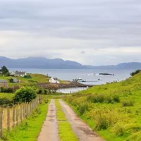

The Long Way Round · Episode 1
The lighthouse at the edge of Shetland
Isla spends a week with the last lighthouse keepers in Shetland and learns what it means to be needed.
27 September 2026 · 40 min · with The keepers

The lighthouse at the edge of Shetland
The Long Way Round
The Long Way Round
0:0040:00
Demo player: this episode has no real audio, but the timing, seeking, speed and mini-player all work.
Chapters
Isla spends a week with the last lighthouse keepers in Shetland and learns what it means to be needed.
In this episode
- Arriving
- The lamp
- A storm
- Leaving
Show notes
This is a demo episode for the Static podcast network. There is no real audio: press play to try the player, which keeps its place as you move around the site.
Transcript excerpt
“I think the real surprise was how ordinary it all felt. The big moments were small, and the small moments were big.”
Full transcripts are available to members.